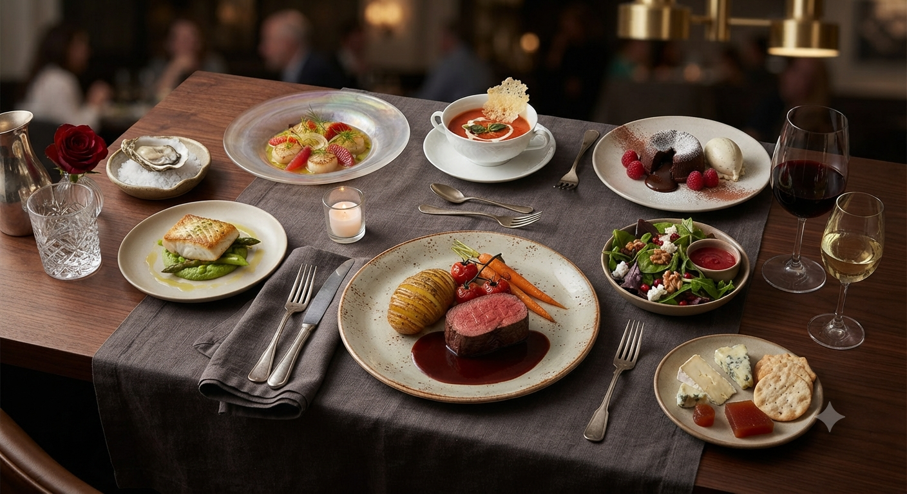
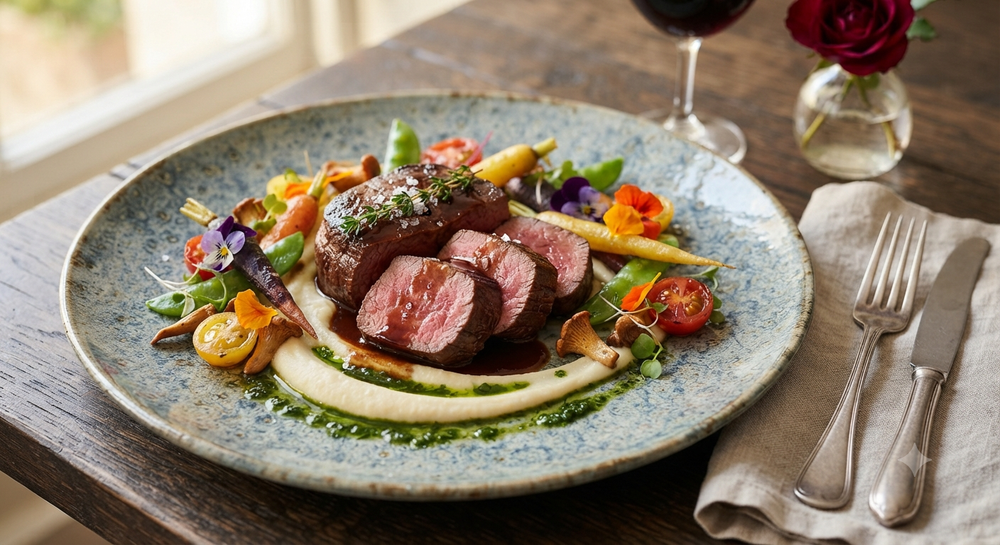
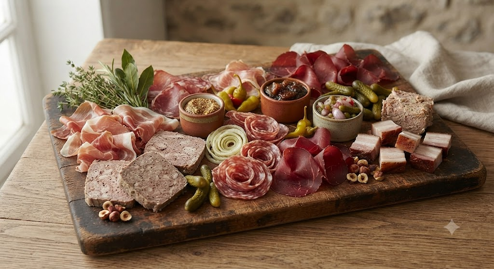
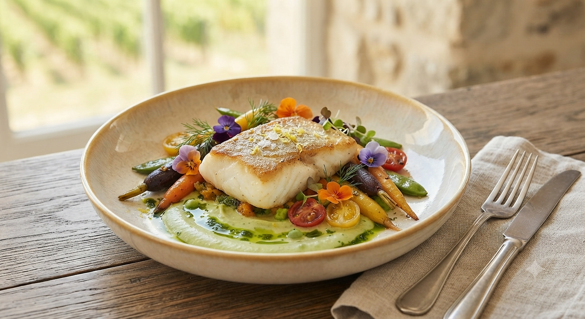

MICHELIN GUIDE SELECTION
佐山 直嗣 Naotsugu Sayama
1977年宮城県生まれ。地元の名店「もんこばん あずまや」で基礎を学び渡仏。パリの人気ビストロでモダンなスパイス使いを、ロワールでは本格シャルキュトリー技術を習得。
「本場の美味しさを、もっと身近に。」その想いを胸に、2015年、故郷仙台にオー・ベリエをオープンしました。
ミシュランガイド掲載。自家製シャルキュトリーと至高の肉料理。
Reservation
022-706-7914
現在、ランチ・ディナー共に事前予約を推奨しております
空席確認・ネット予約
「オー・ベリエ」の扉を開けると、そこに広がるのはフランスの街角にあるような温かな空間。
私たちの自慢は、職人技が光る自家熟成シャルキュトリー。本場ロワールで習得した伝統の製法を忠実に守り、豚肉の旨みを最大限に引き出しています。
気取らず、力強く。本当に美味しいものを、心ゆくまで。そんな「ビストロノミー」を仙台の皆様にお届けします。

噛みしめるほどに溢れる肉の旨み。クリーミーなマッシュポテトと秘伝のソースの調和は絶品。
イチオシの逸品
パテ・ド・カンパーニュ、ハム、ソーセージなど。すべて店内の工房で手作りされる、ワインが進む職人の味。
本場仕込みの技
皮目はパリッと、身はふっくらと。三陸の豊かな海の幸を、繊細なフレンチの技法で仕上げました。
ランチコース人気
MICHELIN GUIDE SELECTION
1977年宮城県生まれ。地元の名店「もんこばん あずまや」で基礎を学び渡仏。パリの人気ビストロでモダンなスパイス使いを、ロワールでは本格シャルキュトリー技術を習得。
「本場の美味しさを、もっと身近に。」その想いを胸に、2015年、故郷仙台にオー・ベリエをオープンしました。
「お値段は手頃なのにクオリティが抜群に高く、非常に満足でした。ランチ・ディナー共に再訪したいです。」
— 30代女性
「牛ハラミの焼き加減とソースが絶品。パンの追加を尋ねてくれる心配りも嬉しかった。」
— 40代男性
「この本格的なパテを遠方の友人にも贈りたい」「家でもお店のハラミステーキと美味しいワインで贅沢なディナーを過ごしたい」という温かいお声にお応えして、オー・ベリエの味を全国へお届けするお取り寄せショップを現在企画・準備中です。
パテ・ド・カンパーニュ、自家製ハム、ソーセージなどを、本場仕込みの味そのままに真空パックで詰め合わせます。
お店で一番人気のハラミステーキ肉、クリーミーなマッシュポテト、そして旨み溢れる秘伝のソースをセットでお届け。
お祝いや季節の贈り物に最適な、ワインと極上シャルキュトリーがセットになった、大切な人に喜ばれる贅沢なギフトセット。